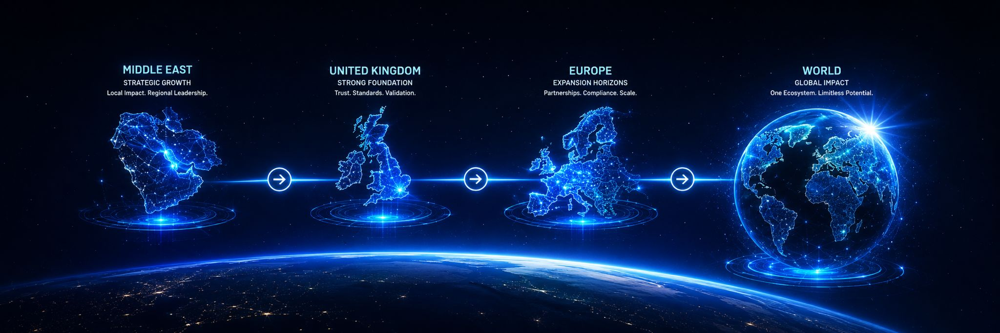
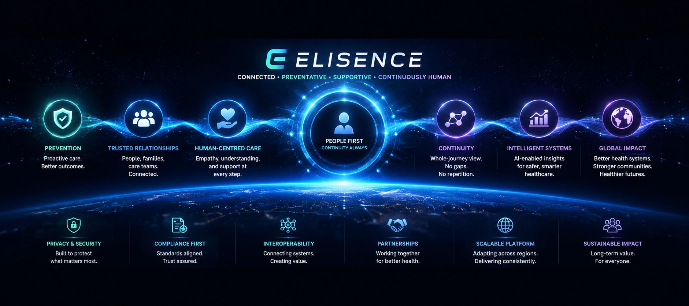

🥗 Intelligent Nutrition
AI-powered nutrition guidance, food recognition and calorie intelligence help members make healthier decisions every day.

Slide 01
Elisence is a connected digital health ecosystem that brings together people, families, healthcare professionals, hospitals, pharmacies, insurers, researchers and governments through one trusted platform. It connects prevention, nutrition, chronic disease management, medication, GP services, laboratory intelligence, social health, family engagement and continuous AI-powered guidance into one seamless health journey.
AI-powered healthy eating guidance.
Calories and nutrition from a food photo.
Personalised weight-loss progress support.
Track therapy, adherence and outcomes.
Support for diabetes and long-term conditions.
Reminders, adherence and medicine support.
Digital GP support and care continuity.
Connected prescription and pharmacy support.
Human-friendly laboratory explanations.
Early risk awareness through health trends.
Support across every life stage.
Environmental context for everyday health.
Motivation through milestones and rewards.
Safe health sharing, learning and support.
Videos, articles, audio and trusted content.
Secure, governed and globally accessible.
Nutrition is not a standalone feature.
In Elisence, every healthy choice becomes part of a connected journey across motivation, family, chronic care, health intelligence and measurable prevention.
AI-powered nutrition guidance, food recognition and calorie intelligence help members make healthier decisions every day.
Achievements, rewards, milestones and personalised challenges encourage members to maintain healthy habits over time.
A Health Social Network connects members, families and healthcare professionals to share experiences, encourage each other and build healthier lifestyles together.
Elisence combines nutrition with medication, laboratory intelligence, chronic conditions, weight, activity and longitudinal AI to understand the person's overall health journey.
One platform connecting people, families, healthcare professionals and health systems.

From everyday life to prevention, intelligence and better health outcomes.

Beyond nutrition tracking: one connected health ecosystem for healthier people, stronger engagement and measurable long-term outcomes.
AI-powered nutrition guidance, food recognition, calorie intelligence and personalised recommendations help members make healthier decisions every day while building sustainable long-term habits.
Gamification, achievements, rewards, personalised challenges and healthy milestones motivate members to improve their lifestyle, maintain healthier routines and remain engaged over the long term.
Unlike traditional health applications, Elisence includes a complete Health Social Network where members, families, clinicians and healthcare professionals can communicate, learn from each other, share experiences and encourage healthier lifestyles together.
Every member has their own health channels, trusted media space and secure document library for articles, videos, educational content and personal health records, creating continuous engagement beyond clinical visits.
Complex laboratory and blood test results are translated into clear, understandable human language, helping members better understand their health while supporting earlier intervention and informed clinical conversations.
Elisence continuously combines nutrition, medication, laboratory results, chronic conditions, activity, weight, sleep and lifestyle patterns to build a complete understanding of each person's health journey—not isolated data points.
Longitudinal AI identifies emerging health trends, predicts future risks, and delivers actionable population-level insights that help organisations like Compensar improve prevention, engagement and healthcare planning.
Prevention, continuity, population understanding, and stronger long-term health outcomes — for healthcare systems, not disconnected tools.
Elisence is designed to support earlier awareness, better self-management, stronger continuity, and healthier long-term participation.
By helping people understand their health earlier and stay engaged over time, healthcare systems may experience fewer avoidable complications, better continuity of care, and more informed patient participation.
The objective is not replacing healthcare.
The objective is helping healthcare work more effectively.
Elisence is designed to support stronger continuity between people and healthcare organisations.
Communication, medication continuity, health participation, tracking, and long-term engagement may help create more connected healthcare experiences.
Healthcare providers remain informed through ongoing participation rather than only episodic visits.
Privacy-aware and governed population insights may help public health organisations better understand:
This may support planning, prioritisation, resource allocation, and public health strategy.
Governed and privacy-aware longitudinal understanding may help support:
The goal is supporting evidence generation without compromising privacy or trust.
Many healthcare systems face growing challenges from diabetes, cardiovascular disease, obesity and other chronic conditions.
Elisence brings together:
The objective is earlier intervention, healthier lifestyles and stronger preventive care rather than reacting only after disease progresses.
Elisence is built as one connected ecosystem composed of independent intelligence engines.
Healthcare organisations can begin with nutrition and progressively expand into:
without replacing the existing platform.
Better understanding of health journeys may support:
The focus is long-term population health rather than isolated events.
Elisence is designed to adapt across healthcare systems, languages, cultures, and regulatory environments.
The platform is built with governance, privacy, healthcare-awareness, and GCC-aligned adaptability principles.
Country-specific implementation can evolve without requiring the entire platform architecture to change.
How Elisence supports continuity, efficiency, engagement, and better long-term outcomes.
Healthcare systems face growing pressure from chronic disease burden, diabetes burden, rising healthcare demand, fragmented care pathways, and increasing medication complexity.
Elisence is designed to help support prevention, continuity, participation, and long-term engagement — helping people stay healthier and more informed between appointments.
By strengthening self-management and ongoing participation, healthcare systems may experience fewer avoidable complications, fewer avoidable visits, stronger continuity, more informed patients, and better long-term outcomes.
The operational objective is reducing avoidable pressure — not replacing clinical care.
Healthcare normally sees people during appointments — yet most health journeys happen between visits.
Elisence helps maintain continuity between visits through tracking, medication continuity, participation, follow-up, communication, and social health support.
Continuity matters because disconnected care increases confusion, missed follow-up, medication gaps, and reactive escalation — while ongoing connection supports safer, more informed, and more coordinated healthcare experiences over time.
Medication continuity is operationally supported through medication reminders, refill awareness, adherence support, medication intelligence, pharmacy journeys, and safety awareness.
For hospitals, clinics, pharmacies, and care networks, this helps reduce missed doses, support safer refill timing, strengthen pharmacy participation, and maintain clearer medication journeys across organisations.
Operational value: better adherence, better safety, and better continuity across the care pathway.
Elisence promotes healthy engagement — not addictive engagement designed around attention loops or advertising-driven behaviour.
People stay connected through family support, social participation, trusted communities, care teams, and healthcare professionals — supporting healthier long-term participation rather than isolated app usage.
For healthcare organisations, this operational model supports sustained engagement that strengthens continuity, participation, and healthier outcomes over time.
Healthcare often relies on isolated snapshots — appointments, tests, episodic visits, and fragmented records captured at single points in time.
Elisence supports understanding health over time through nutrition, hydration, activity, medication, symptoms, body metrics, and participation — helping build a clearer picture of health journeys rather than disconnected moments.
Longitudinal understanding is valuable because it may support earlier awareness, better continuity, more informed clinical conversations, and stronger operational decision-making across hospitals, clinics, insurers, and care networks.
Insurers and health plans may benefit operationally from stronger prevention participation, clearer continuity patterns, population understanding, sustained engagement, more informed risk awareness, and better long-term outcomes.
Rather than focusing only on isolated claims events, Elisence is designed to support healthier member participation, continuity of care, and long-term population health understanding.
Operational focus: healthier populations and stronger continuity — not disconnected transactional interactions.
Pharmacies and care networks play a critical role in medication continuity, refill support, adherence awareness, communication pathways, pharmacy participation, and coordinated care journeys.
Elisence is designed to help pharmacies remain connected to ongoing health journeys — supporting refill timing, adherence awareness, safer medication pathways, and clearer communication with people, families, and care teams.
Operational value: stronger pharmacy participation, safer medication continuity, and more connected care network experiences across the healthcare pathway.
Traditional healthcare often reacts after problems occur — responding to illness, complications, escalation, and episodic demand.
Elisence is designed to support earlier awareness, prevention, participation, continuity, and long-term engagement — helping healthcare organisations shift toward proactive health support rather than reactive intervention alone.
This operational shift may help hospitals, clinics, insurers, pharmacies, and care networks support healthier populations, stronger continuity, and better long-term outcomes over time.
Helping healthcare systems deliver stronger continuity. Helping insurers support healthier populations. Helping pharmacies and care networks stay connected. Helping people achieve better long-term outcomes.
Built medical-aware, governed non-medical by default.
Trust is not paperwork. Trust is architecture.
Trust-led healthcare value creation.
One ecosystem. Multiple value layers. Trust before monetisation.

Global healthcare challenges.
Local healthcare realities.
Responsible localisation.
Repeatable expansion.
One platform designed for long-term international healthcare impact.
A founder story rooted in healthcare continuity
Elisence began with a simple but deeply personal question:
Why does healthcare so often feel fragmented, stressful, confusing, and difficult to navigate — especially when people are already vulnerable?
Through my background across engineering, legal, business, and care services, including home and domiciliary care, I repeatedly saw the same pattern:
People are increasingly expected to manage medication, prevention, chronic conditions, appointments, wellbeing, family care, and everyday healthcare decisions across systems that rarely feel connected, human, or easy to navigate.
Over time, I became increasingly interested in whether better systems thinking, thoughtful design, trusted health intelligence, and more connected experiences could help healthcare feel calmer, safer, more supportive, and easier to understand.
Behind that question is something I kept seeing again and again — healthcare fragmentation, broken continuity, and the growing complexity of modern healthcare, with families and caregivers carrying much of the burden when people are left navigating systems that do not connect.
I came to care deeply about trusted health participation — not as a slogan, but as something people deserve when they are already vulnerable and doing their best to stay well.
I bring together an engineering background, legal training, business experience, and years close to care — including home and domiciliary care — shaped by healthcare systems thinking and long-term commitment rather than short-term ambition.
It is inspired by and named after my daughter, Elisa — reflecting a long-term hope to help build a future where healthcare feels more connected, more trusted, more human, and easier to navigate for the people we care about.
For me, Elisence is not simply a company or a product.
It is a long-term mission to reduce fragmentation, strengthen continuity, and help healthcare feel more human, supportive, and connected over time.
Continuity matters because health is lived across years, not moments. Trust matters because people should not have to wonder whether the systems supporting them are safe, respectful, or aligned with their wellbeing.
Human-centred healthcare matters because dignity, clarity, and connection should not be optional. Connected healthcare experiences matter because fragmentation adds stress to situations that are already difficult enough.
For me, this is a multi-decade mission — not something built for a quick cycle, but something worth building carefully for the people we love and for the healthcare environments they depend on.
Elisence is intended to become a long-term healthcare participation platform helping people, families, caregivers, clinicians, pharmacies, healthcare organisations, insurers, and public health systems remain more connected over time.
Engineering • Care • Systems Thinking • Human Heal
A founder story rooted in healthcare continuity
Connected, preventative, supportive, and continuously human.

Healthcare should not feel fragmented, reactive, and disconnected.
We believe people deserve healthcare experiences that remain connected throughout everyday life — not only during moments of illness.
The future of healthcare is not simply better treatment.
It is stronger prevention, trusted participation, meaningful continuity, and healthier long-term relationships between people, families, caregivers, clinicians, and healthcare systems.
A connected future is one where people remain supported before illness, during illness, and long after recovery.
Healthcare should feel calmer, more understandable, more human, and more continuous.
Elisence is designed as a long-term healthcare relationship ecosystem.
Rather than creating another isolated health application, Elisence is intended to connect prevention, continuity, wellbeing, medication support, family participation, social health engagement, trusted health intelligence, and everyday healthcare understanding.
At the centre is ELISA — a trusted continuity companion designed to help people remain connected to healthier routines, trusted participation, support networks, wellbeing journeys, and everyday healthcare decisions.
The objective is not more notifications.
The objective is stronger healthcare relationships.
Build responsibly. Earn trust locally. Scale globally.
We believe healthcare transformation should be achieved through trust, safety, governance, continuity, and responsible innovation.
Starting with local healthcare realities, Elisence is designed to support regional adaptation, country-aware deployment, and responsible international growth.
Our ambition is a future where connected healthcare experiences remain valuable before illness, during illness, and after illness.
A future where prevention matters more.
A future where continuity becomes normal.
A future where healthcare remains connected.
A calmer, more connected, more trusted future for healthcare.
Healthcare should not feel fragmented, episodic, reactive, or difficult to navigate.
We believe people deserve a future where healthcare feels more connected, more trusted, more preventative, and easier to understand over time.
A future where prevention matters more.
A future where continuity becomes normal.
A future where people remain meaningfully connected to their health before illness, during illness, and after illness.
A future where trusted participation, communication, wellbeing, medication continuity, body understanding, social health support, and intelligent guidance work together rather than separately.
We believe healthcare should not only exist in moments of illness.
It should remain present in everyday life — calmer, more supportive, more human, and more continuous.